The default ask: "find the number"
Homework that grades itself usually presents a scenario and asks for one quantity. Such problems build mastery and tenacity — but a steady diet of them trains a narrow, procedural picture of what doing physics is: pick the equation, plug in, solve.
The grader isn't the limit — the question format is
An auto-grader can check any answer with a well-defined key — not just numbers.
Change what you ask for, and the same instant-feedback machinery invites the patterns of thought we prize in rich human-feedback settings:
- designing experiments
- choosing models
- weighing evidence
- critiquing calculations
- diagnosing errors
If the thinking is ___, the answer can be ___
Measuring g with an Atwood machine
You're measuring $g$ by releasing an Atwood machine and timing how long the heavier box takes to reach the floor. Which of these changes will reduce the experiment's uncertainty?
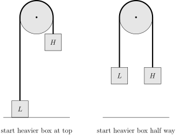
A peregrine falcon dives
A falcon dives from rest, approaching terminal velocity as air drag builds. Connect each plot to the quantity being plotted.
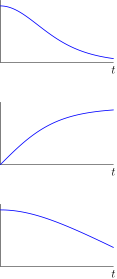
acceleration
Where does Galileo's pendulum stop?
A pendulum released from $C$ swings through $B$, where the string catches on a peg at $E$ and the bob swings on around the peg. Click the point in the image where the bob stops and turns around. (The point isn't necessarily labeled.)
Which hypothesis does each observation support?
Galileo claims every object accelerates the same way under gravity. A (fictional) rival, Prof. Impetus, claims denser objects accelerate faster — and that very low-density objects can even accelerate upward. A third scientist, Dr. Vacuum, tries to settle the question with everyday observations, taking each at face value — never accounting for air drag. Sort each observation by which hypothesis Dr. Vacuum will conclude it supports.
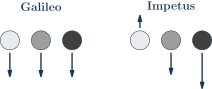
Galileo
Kepler's laws (density never enters)hammer & feather fall together on the Moona balloon would fall on the MoonImpetus
paper falls faster when crumpled tighthelium balloons riseBoth
big & small lead balls land togetherNeither
a skydiver falls faster head-firstWhat should each student try next?
Students are stuck on a classic puzzle: a string is tied snugly around Earth's equator; a second string is $6$ m longer and circles the equator at a uniform height. How high above the ground is it? Match each student's statement to their most productive next step.
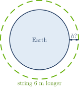
The calculation disagrees with the cradle
Swing one ball into a Newton's cradle: in the demo, exactly one ball pops out the far side at the incoming speed. But a calculation treating the four resting balls as one block — using only momentum and energy conservation — predicts the incoming ball rebounds while the block slides slowly forward. Both outcomes satisfy the conservation laws. Which interpretations are accurate?
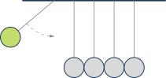
…and more, from a 28-problem survey across the AoPS physics courses
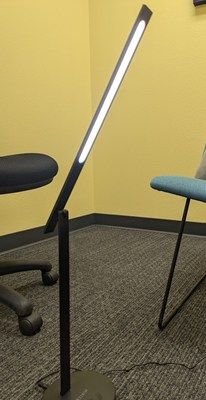
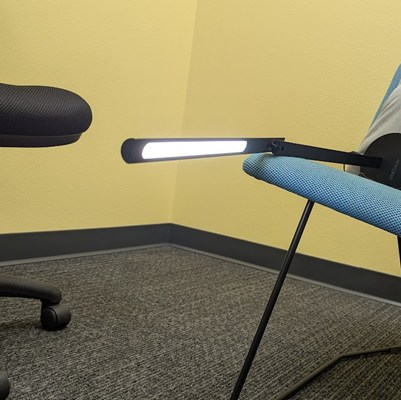
Reason backward from evidence. A tube lamp is either vertical or horizontal. From each object's shadow photo alone, click which. (Middle School Physics 1)
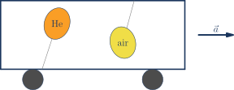
Predict the counterintuitive. Accelerate the car: the helium balloon leans forward. (Mechanics · Fluid Statics)
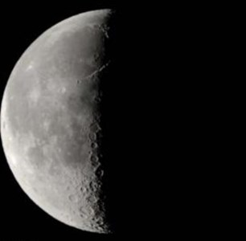
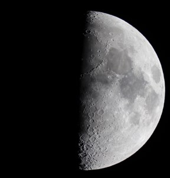
Reason in 3-D. Which quarter moon rises at sunset, and which at noon? Pure spatial reasoning, graded as a match. (Intro to Physics)
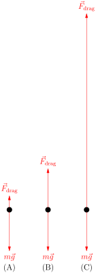
Read a diagram quantitatively. Which free-body diagram is terminal velocity — and which is the chute just opening? Arrow lengths carry the physics. (Mechanics)
⇕
meanings
Read notation as language. Match decorations on $q$ to what they say. Implicit literacy, made explicit. (Intro to Physics)
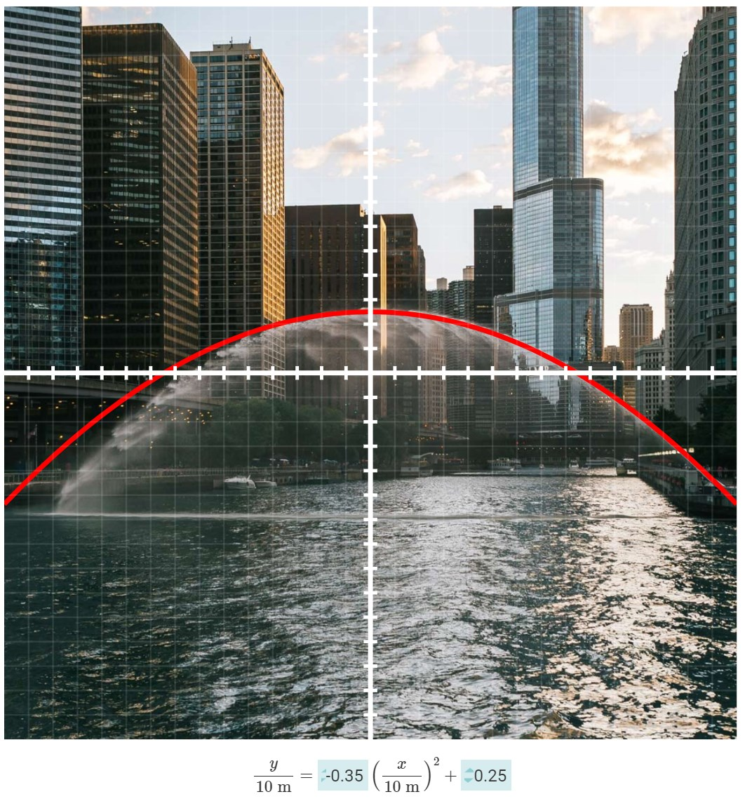
Measure the world from a photo. Fit a parabola to a fountain's stream by entering coefficients; the grader accepts a narrow band. (Mechanics · Projectile Motion)
What are students doing?
Calculating is one row of this table — not the whole table:
Every verb above appears in the 28 surveyed problems — each one auto-graded.
Design principles that emerged
- Grade a decision, not a derivation. Bins, matches, and clicks capture judgments directly.
- Put the misconception in the answer key. A wrong bin is a diagnosis ("lighter" at the valley bottom).
- Ask about someone else's thinking. Flawed reasoners and stuck students invite metacognition.
- Let the diagram be the answer. Click-on-image makes a spatial claim gradable.
- Use cases where the model fails. Interpreting a calculation is a gradable skill.
- Structure prevents lucky guessing. Forced pairs and one-to-one matches discipline the format.
Where we're using humans
Human feedback is the precious resource. We spend it where nuance pays most: proofs, writing, open-ended design, and discussion. Broad auto-graded problems don't replace that feedback — they conserve it, by keeping the rest of the homework from defaulting to procedure.